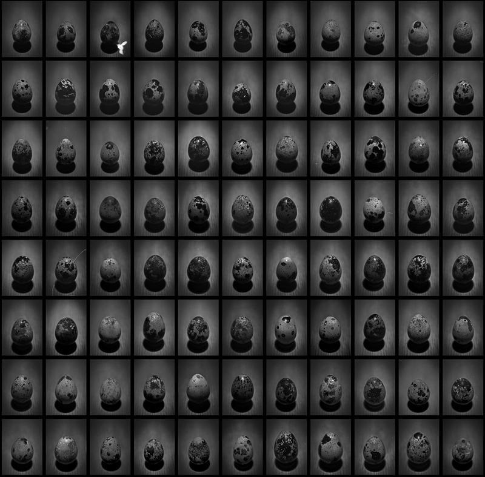
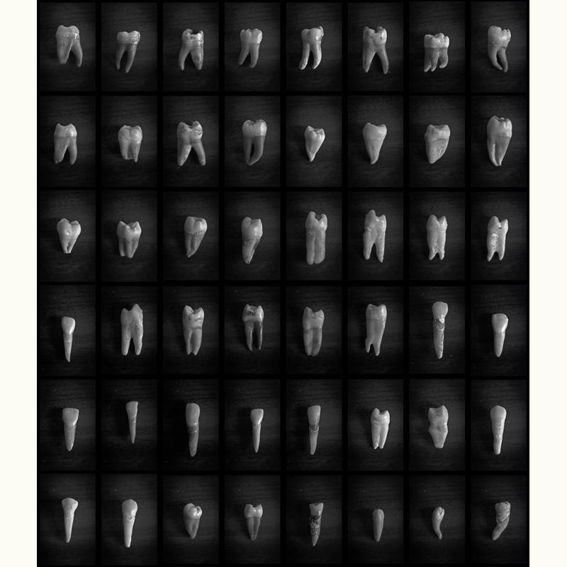
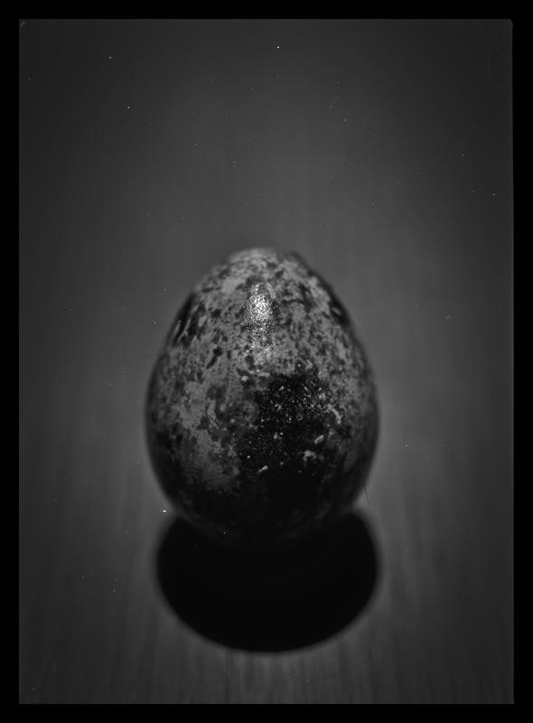
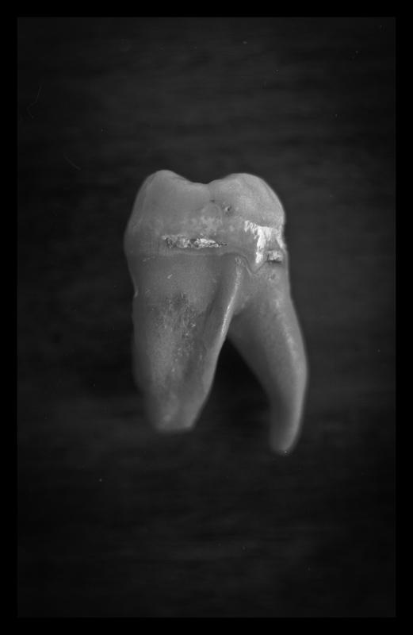

2014
Desambiguação
Fotografias




Desambiguação é uma série composta por dois polípticos fotografados com câmera de grande formato em filme 5 × 7 polegadas.
A origem do trabalho remonta a uma prática desenvolvida pelo artista aos dez anos de idade: um jogo em que objetos, lugares e elementos do cotidiano recebiam nomes próprios. Na série, essa operação é retomada sob outra forma. Em vez de renomear aquilo que já existe, o trabalho propõe novas imagens para sistemas de representação consolidados, investigando as relações entre classificação, linguagem e reconhecimento.
O primeiro políptico é composto por 88 fotografias de ovos de codorna, correspondendo ao número de constelações atualmente reconhecidas pela astronomia. O segundo reúne 48 fotografias de dentes humanos, em referência às estrelas mais brilhantes visíveis no céu a partir da Terra. Cada imagem recebeu uma denominação em latim.
O título da série refere-se ao conceito de desambiguação, utilizado em áreas como a linguística, a catalogação e os sistemas de informação para distinguir elementos que compartilham nomes, significados ou referências semelhantes.
Em Desambiguação, esse procedimento é deslocado para o campo visual. As constelações e estrelas permanecem identificáveis por meio de seus nomes, mas passam a ser representadas por imagens sem relação direta com seus referentes astronômicos. A série evidencia que a estabilidade dos sistemas classificatórios depende menos de uma correspondência natural entre palavra e objeto do que dos acordos culturais que sustentam sua interpretação.
Realizados em fotografia analógica de grande formato, os polípticos constituem um catálogo alternativo do céu, no qual ovos de codorna e dentes humanos ocupam o lugar das representações astronômicas convencionais, reorganizando as relações entre nome, imagem e referente.